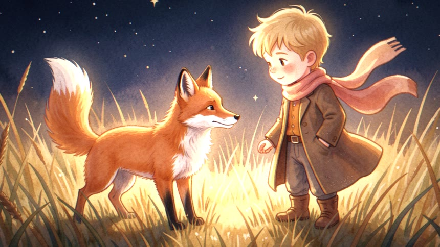
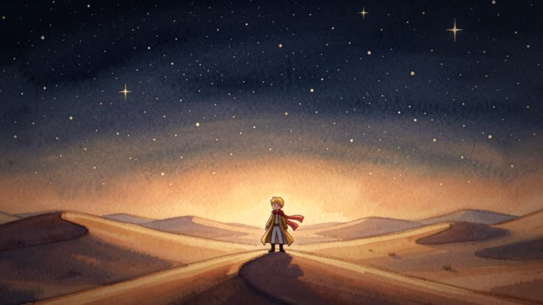
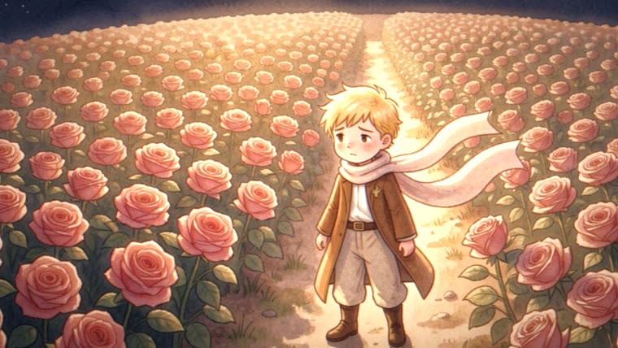

Um diretor de verdade: vê cada imagem, decide câmera, corte, transição, música e efeitos — e renderiza determinístico via pixflow.

A imagem que sai é a sua — o que o Diretor adiciona é cinema: movimento de câmera, ritmo de montagem, profundidade e som. Nada de frames inventados por IA de vídeo.
Analisa com visão: foto ou desenho, conteúdo, emoção e o ponto de interesse exato onde a câmera deve mirar. Imagens ricas viram 2–4 shots.
18 movimentos de câmera + framing from/to, transições por intenção (corte, whip, dip, crossfade), curva de 3 atos e fim suspenso — regras validadas em A/B.
Narração governa o timing; música com ducking automático sob a voz, vento, whooshes e shimmers completam a mixagem num master único.
Sete passos, sempre nesta ordem — a decupagem é mostrada para aprovação antes do render.
Tudo local e código aberto. O motor de render é o pixflow v2.3+ (Depth-Anything-V2 + Three.js + Remotion + FFmpeg).
Clonar e conferir as dependências do motor de render.
# checar deps do motor cd ~/projetos/pixflow/skill node cli/pixflow-motion.mjs check-deps
Node ≥18 para os scripts e CLI; ffmpeg/ffprobe para áudio e verificação.
node --version # ≥18 ffmpeg -version
Symlink no diretório de skills do Claude Code.
ln -s ~/projetos/diretor-animacao/skill/diretor-animacao \
~/.claude/skills/diretor-animacaoO caminho feliz: você entrega o material e aprova a decupagem; a skill dirige e renderiza.
Uma pasta com as imagens (fotos e/ou ilustrações, ideal ≥1920px) e a narração — WAVs por trecho, um WAV único, ou só o texto (a skill gera TTS local).
meu-projeto/ ├── img/ s1.png s2.png … # as imagens, na ordem da história └── audio/ s1.wav s2.wav … # narração por trecho (ou narracao.txt)
Aponte a pasta e use um gatilho da skill. Pode pedir música e efeitos junto.
"~/meu-projeto — vira filme, impactante, com música e efeitos de som"
A skill mostra a tabela cena · imagem · beat · movimento · transição · duração antes de renderizar. Ajuste o que quiser (ou diga "direto" para pular a aprovação).
# exemplo de linha da decupagem
c1 · s1 · abertura · pull-out dramático · cut · 6.1s
A narração governa as durações; o montar-trilha compensa os overlaps de transição (nunca calcule starts na mão).
node scripts/montar-trilha.mjs decupagem.json narracao.wav
O spec YAML (pixflow.movie/v1) é validado e renderizado pelo motor — mesmo spec, mesmo filme, sempre.
node cli/pixflow-motion.mjs validate filme.movie.yaml node cli/pixflow-motion.mjs render filme.movie.yaml filme.mp4
Brilho frame a frame nas fronteiras (anti-pisca) e inspeção visual de frames-chave — o filme só é entregue conferido.
ffmpeg -ss 6.0 -i filme.mp4 -frames:v 12 \ -vf "signalstats,metadata=mode=print:key=lavfi.signalstats.YAVG" -f null -
Primeiro filme real da skill: 21 aquarelas + 22 trechos de narração viraram 26 shots com música CC0 (ducking sob a voz), vento de deserto, whooshes e shimmer de estrelas. Decupagem completa e lições →


Construído por pilotos A/B — cada regra da gramática foi validada com filme renderizado de verdade.